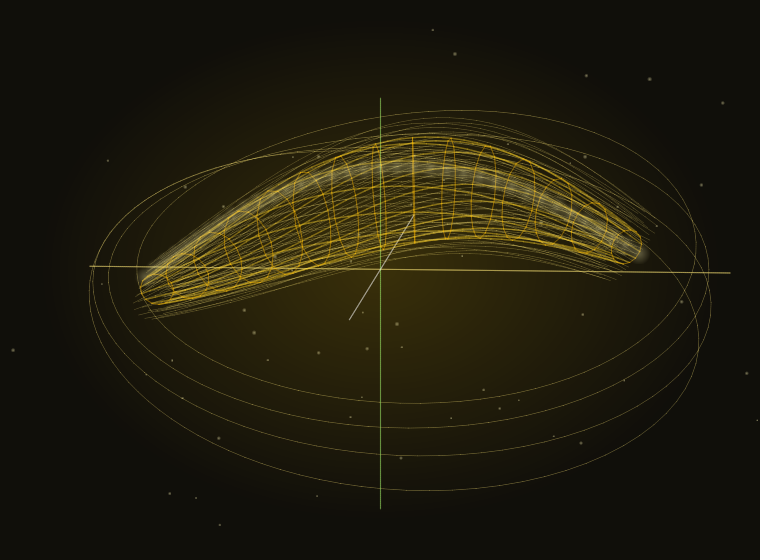
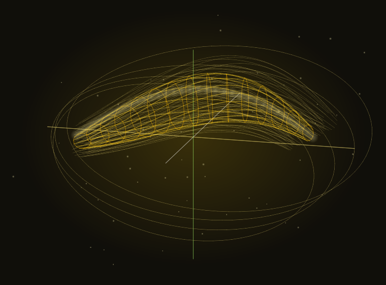
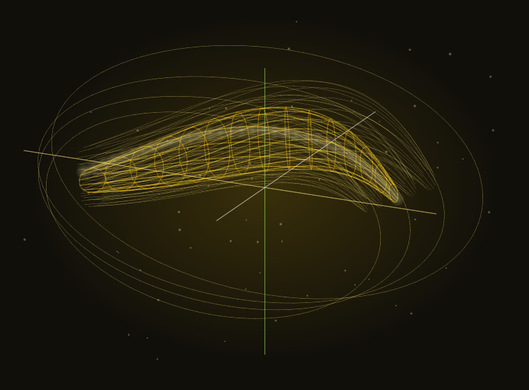
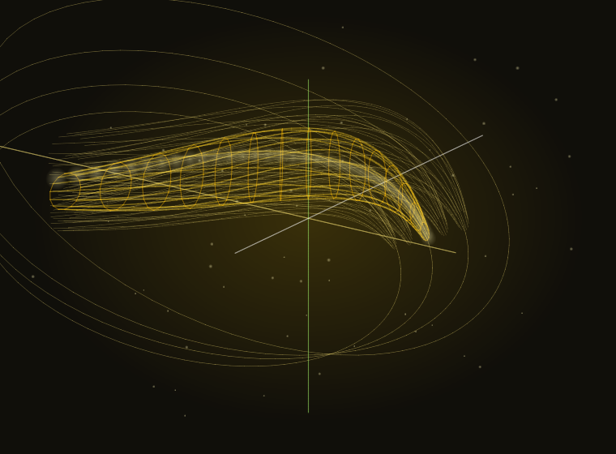

AgentPipe
A high performance multithreaded task execution and optimization engine for agents and decentralized web apps.
Deterministic 4D banana simulation
An animated yellow banana-like surface rotates through a dark four-dimensional projection grid. The visual is deterministic from seed 314159 and is decorative context for the AgentPipe pipeline.
Static frame descriptions for the animation:
- Frame 1 shows the banana surface crossing the x and w axes near the center.
- Frame 2 shows the curve rotating forward with the bright ridge on the left side.
- Frame 3 shows the projection grid behind the banana widening as the w axis turns.
- Frame 4 shows the banana ridge returning to center with the same seed and geometry.




Task pipelines with less waiting and more throughput.
AgentPipe coordinates work across agent workflows, optimization passes, database routines, recipes, financial interfaces, and reactive visualizers. The repository mixes Python, TypeScript, JavaScript, Go, Rust, COBOL, and Brainfuck modules around one simple idea: keep tasks moving fast.
A deterministic 4D banana, rendered in the browser.
The animation above is not a video or static asset. It is generated from fixed mathematical samples, rotated through 4D space, projected onto a 2D canvas, and drawn entirely on the client. It also includes a text equivalent, keyboard-operable motion control, and reduced-motion fallback for assistive technology users.
point = banana(u, v, w)
rotated = rotateXW(point, time)
screen = project4Dto2D(rotated)Download AgentPipe and run the pipeline locally.
Clone the repository or download the source archive, install the Python and Node dependencies from the README, and start experimenting with the task engine modules.